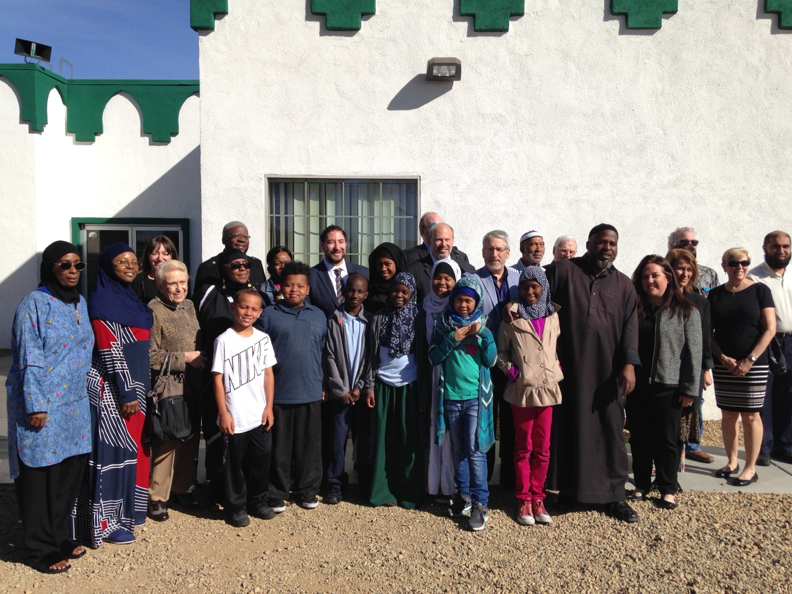
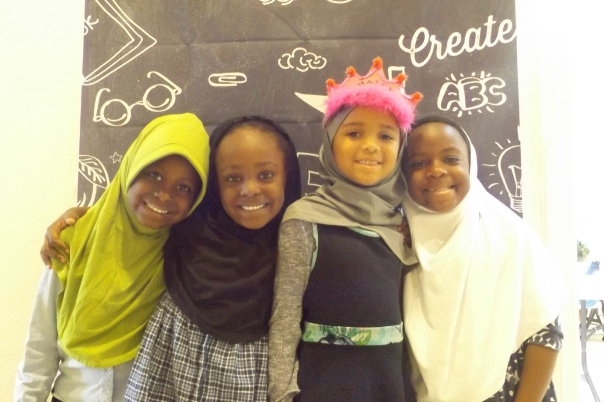
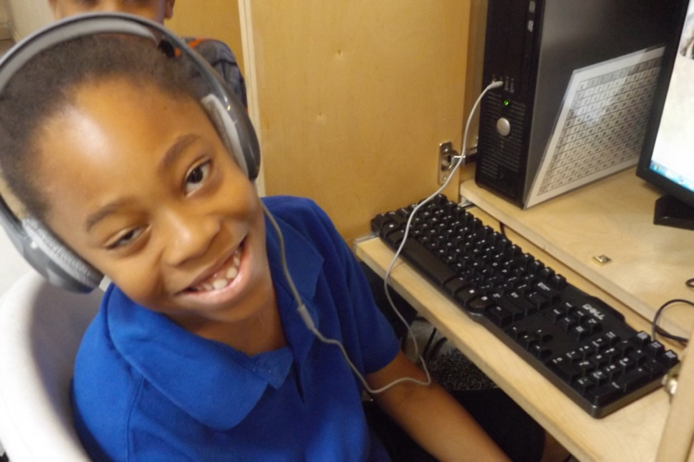
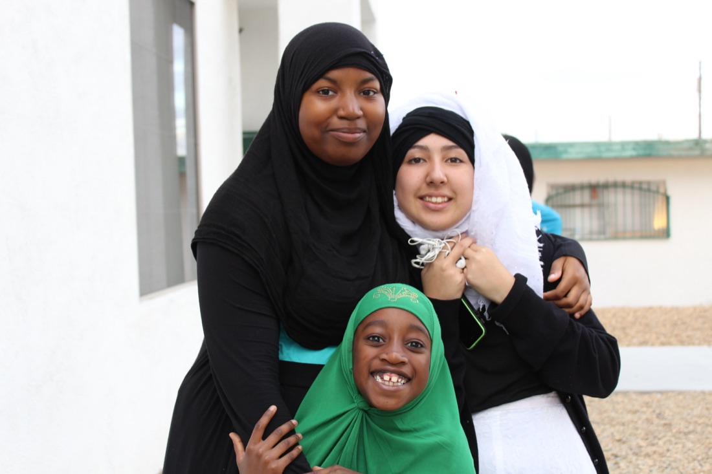
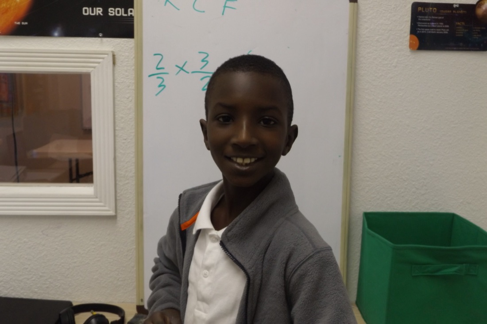
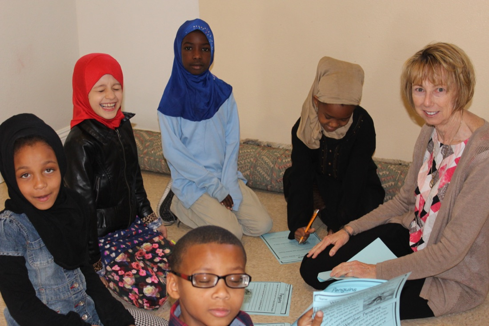
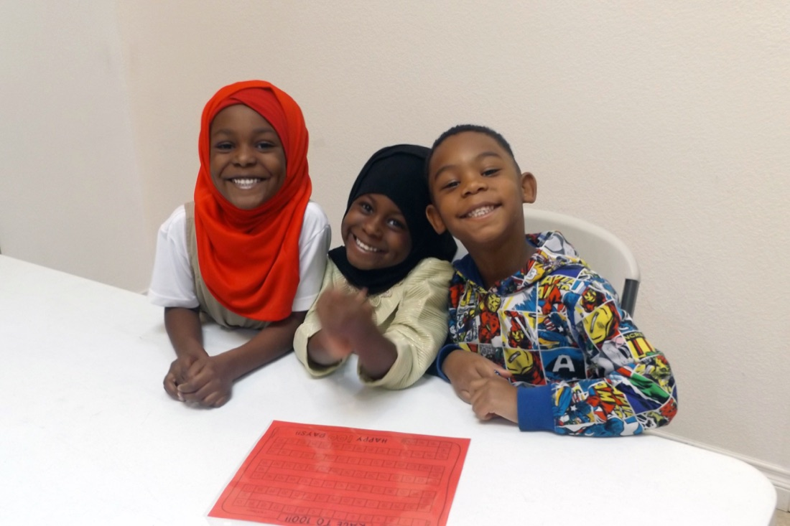

Nisaa’s Academy · Sunday School
Where our children learn to read the Qur’an.
Every weekend on the Historic Westside, children gather at Masjid As-Sabur to learn their Arabic letters, open the Qur’an, and grow in good character — taught with the same love Sister Nisaa poured into it.
In loving memory of Sister Nisaa Seifullah — this was her baby.

What it is
A Sunday school with a long memory.
Nisaa’s Academy is Al-Maun’s weekend school for the children of the neighborhood. Boys and girls come to learn the Arabic alphabet, to sound out their first words, and — letter by letter, sūrah by sūrah — to read the Qur’an for themselves. Alongside the reading, they learn adab: the manners, patience, and kindness that make a good neighbor.
The classes carry the name of Sister Nisaa Seifullah, Al-Maun’s co-founder and president. For more than twenty years she taught the children of this masjid to read — and generations of Westside families learned their Arabic at her side. The academy keeps her name, and keeps her work going.
Everyone is welcome, and cost is never the reason a child stays home. If your family would like to enroll, or you’d like to help keep a seat open, we’d love to hear from you.
In the classroom
Twenty years of bright mornings.
A few moments from Nisaa’s Academy — many from Sister Nisaa’s own years teaching the children of the Westside.






What children learn
Four things, taught with patience.
The Qur’an
From the first letters to fluent recitation — at each child’s own pace, with no one left behind.
Arabic letters
Reading and writing the alphabet that unlocks the Book — and a language shared by a billion neighbors.
Adab & character
Manners, honesty, and the akhlāq of the Prophet ﷺ — the quiet lessons that outlast any worksheet.
A place to belong
Weekend mornings with friends, mentors, and a masjid that knows every child by name.
Keep her classroom full.
Sponsoring Sunday school covers a child’s books, supplies, and a warm place to learn — and it keeps Sister Nisaa’s work alive for the next generation of the Westside. Want to enroll your own child? Just send us a note.